Southeast Asia · Thailand · Krabi
Krabi and Railay, September 2019
I flew from Bangkok to Krabi on the evening of September 4, 2019 and stayed four nights. I slept in Krabi Town, spent one evening at Ao Nang beach, one day on the Railay peninsula, and a weekend night at the Krabi Walking Street market. On September 8 I left for Ko Phi Phi.
My conclusion up front: this is a record of four days, with gaps. I do not remember what I paid for the boat, the room or most of what I bought, so those numbers are missing and I say so. I leave out faces and videos with people.
The times are my phone's clock, shown by Google Photos in GMT+07:00. The places are Google Photos' pins, and I say where a pin is an estimate. The boxes hold what I looked up in November 2026.
- Krabi Walking Street runs on Fridays, Saturdays and Sundays, about 17:00 to 22:00, on Soi Maharaj 8 in Krabi Town. In 2019 the sign said 16:00 to 22:00.
- Ferry to Phi Phi from Klong Jilad Pier in Krabi Town: a ferry from about 500 baht and a speedboat from about 1,000 baht on one ticket site, with departures around 09:00 and 13:30.
- Railay is reached by boat. I did not find a current fare I can cite, so I do not give one.
The sources are in the box below the story. These things change, so check before you go.
September 4 and 5: arriving
I landed in Krabi on the evening of September 4. I do not remember how I got from the airport to town, or what it cost. I think I slept at Saran Hotel Krabi, in Krabi Town, but I am not sure and I have no receipt.
On September 5, around 18:18, I photographed the road from inside a car at sunset. I do not remember whose car it was or whether it was a taxi. At 18:46 I was on the beach at Ao Nang, and at 18:50 I photographed the sunset from the sand. At 19:30 I photographed a mosque lit up at night.
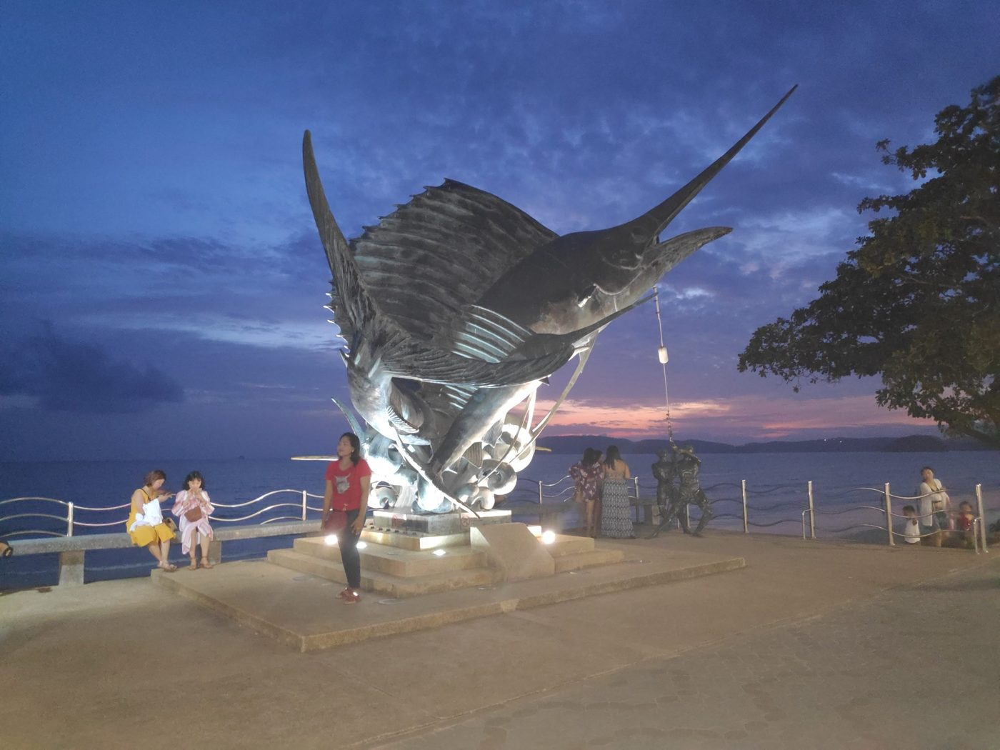
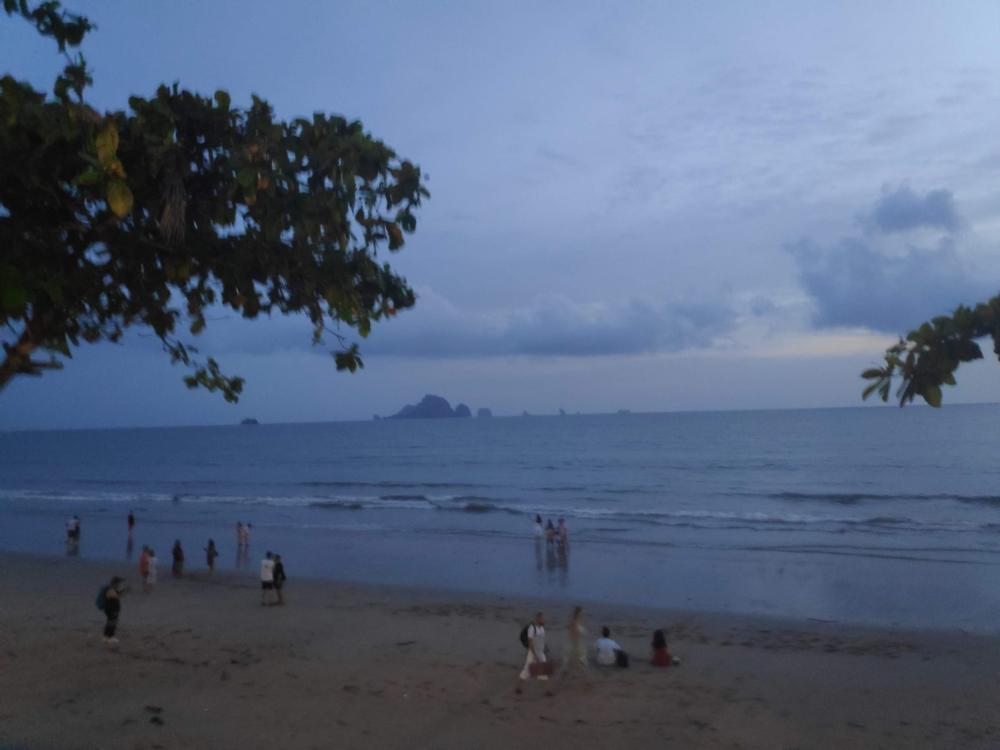
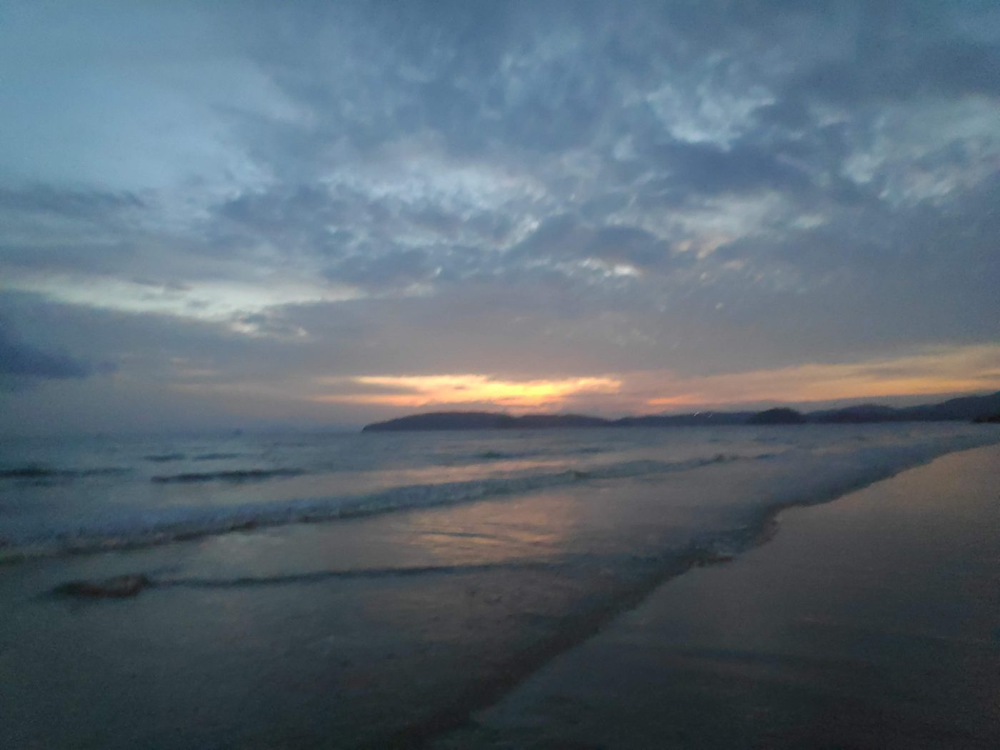
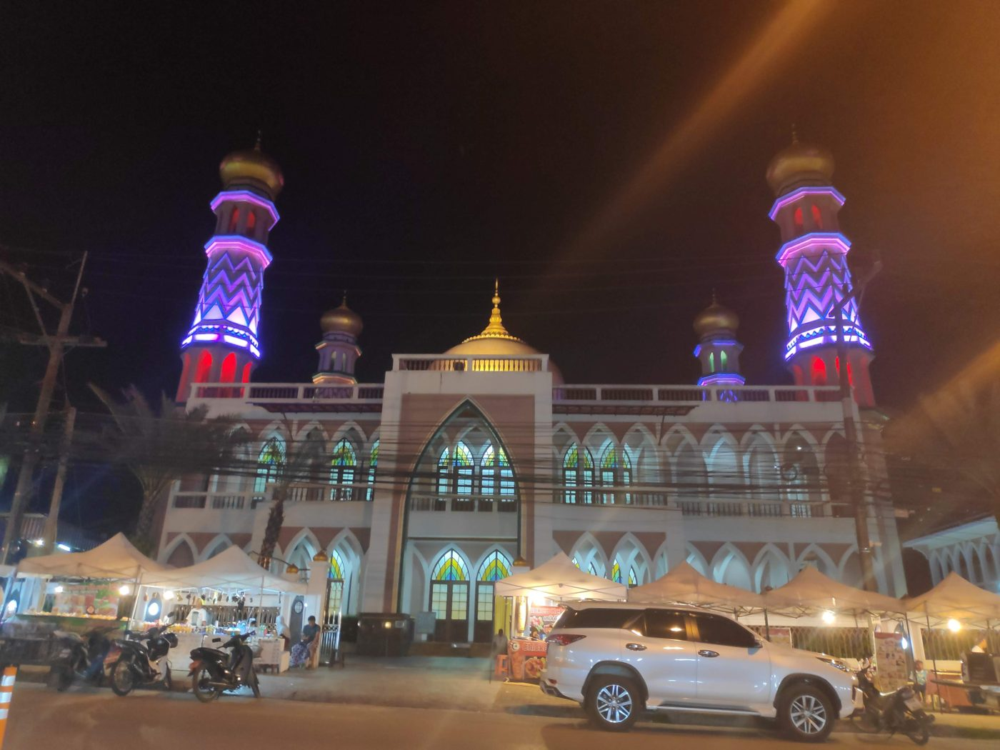
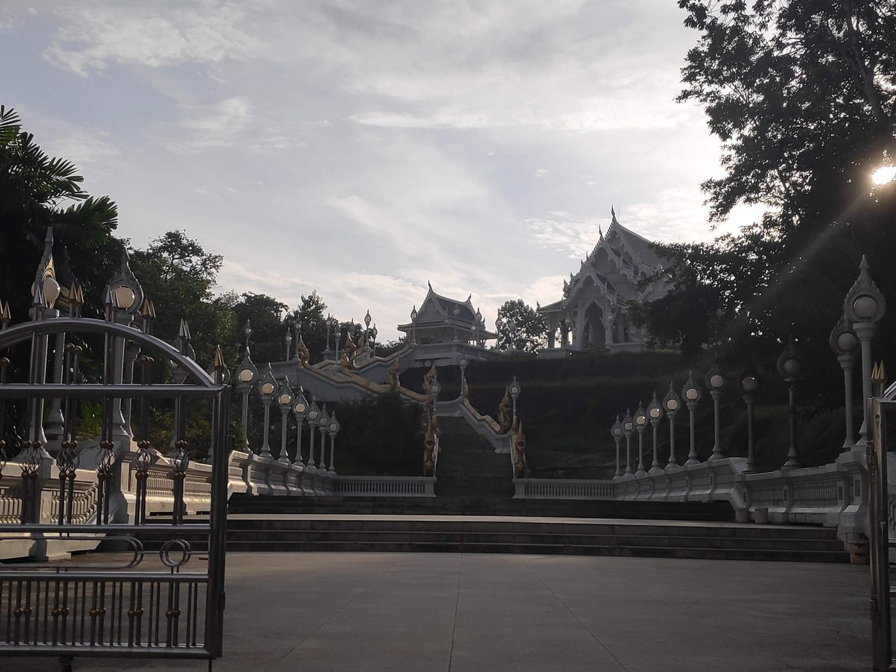
The temple on the right is the one I only saw from outside. Google Photos puts it in Krabi Town, near Wat Kaew Korawaram, and I did not confirm its name.
September 6: Railay
On September 6 I went to the Railay peninsula by boat. My first boat photo is from 13:10, and I do not remember where the boat left from, who I paid or how much. Railay can only be reached by water, and the boats are long-tail boats.
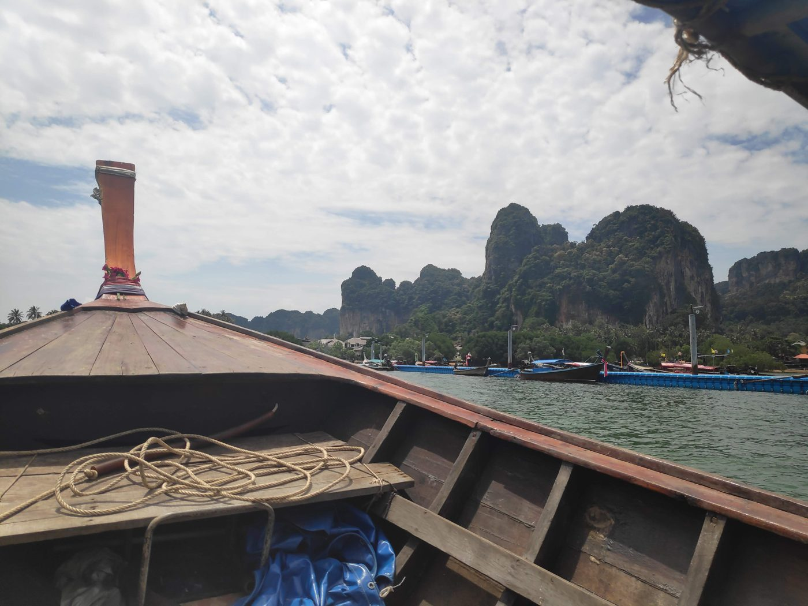
On the peninsula I walked to a cave with a shrine to a princess, with many carved wooden offerings. I took only one wide photo of it. I saw monkeys on the way. I also went to a lagoon in a rock gorge. The path there includes a section where you climb with a rope, and it was hard. I did not time it, and I am not recommending it to anyone.
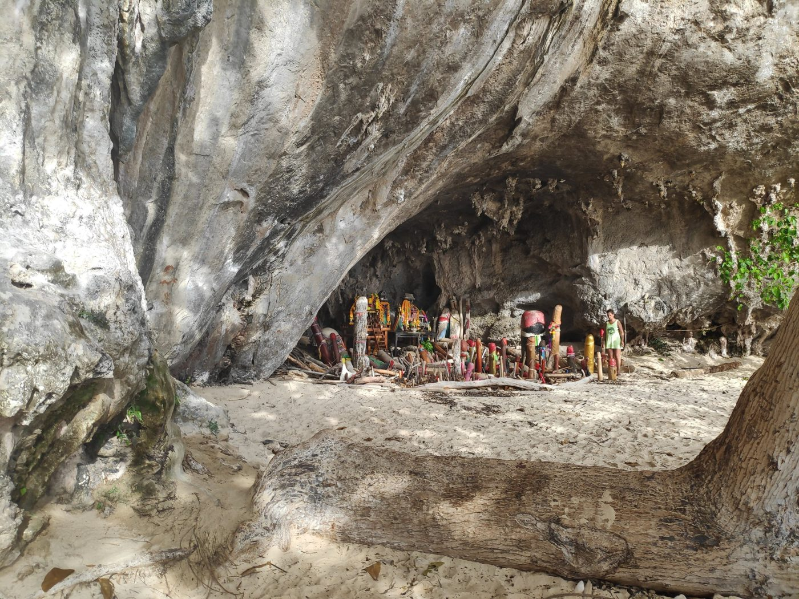
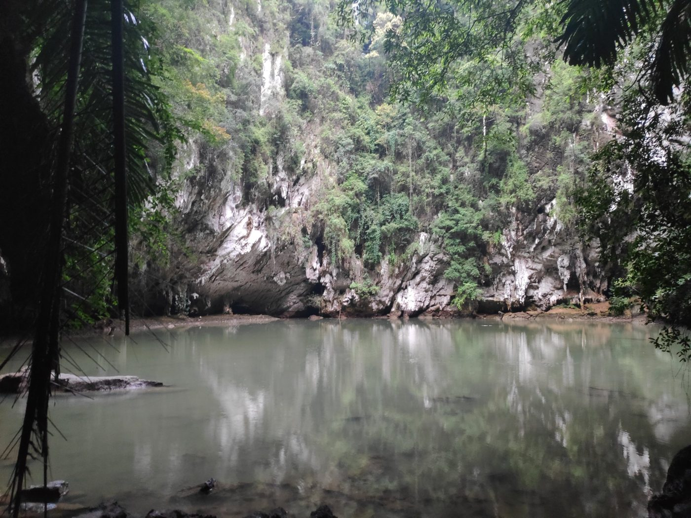
Near sunset I climbed to a viewpoint. In the photo I took at 18:25 you see the forest, the cliffs and the long beach below. A few minutes later, at 18:40, I was back by the water at dusk, and then I went to a garden with live music.
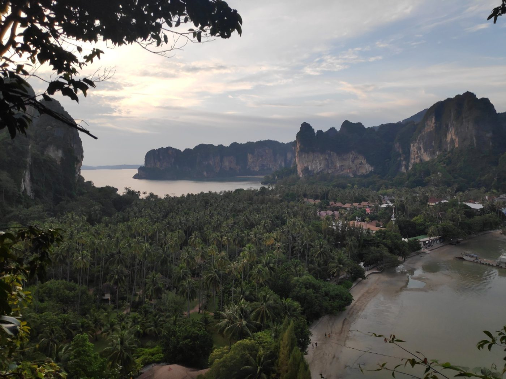
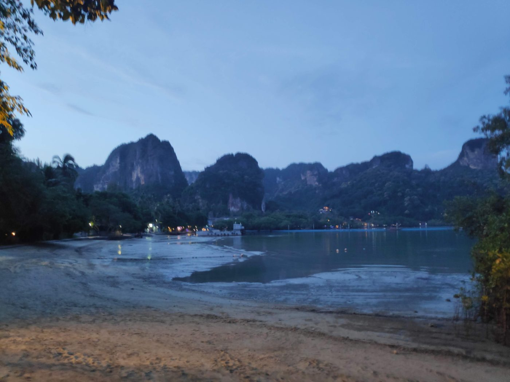
September 7: boats, then the night market
On September 7 I spent the day around the Railay boats and the pier. My video of it is from 12:19, which I do not show. Later that evening I went to Krabi Walking Street, a weekend market that Google Photos pins in Pak Nam, in Krabi Town. The sign in 2019 said it was open Friday to Sunday from 16:00 to 22:00.
It was very close to the place where I stayed. There was a stage with a dance show, and I stopped to watch it because something drew me in. I do not show those videos because they show performers. I bought a Liverpool shirt and a piece of Thai fabric. I do not remember the prices, and I paid in the local currency.
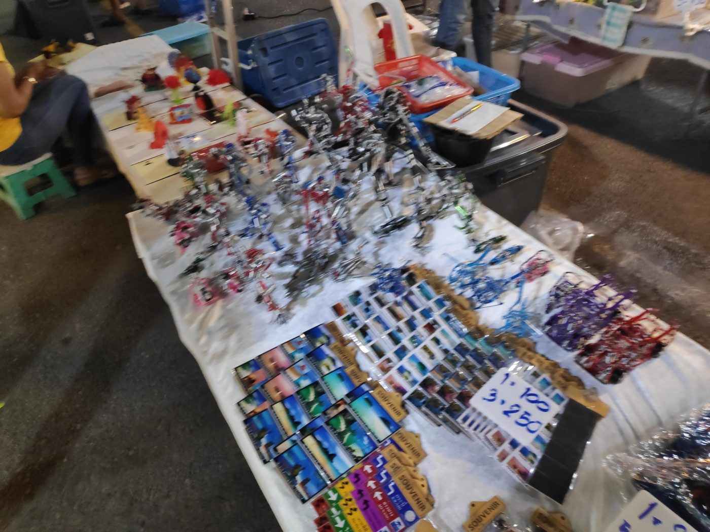
The night of September 7 to 8
At 00:29 I have photos of a bar decorated with Liverpool and Ferrari flags. I did not confirm where it is. At 01:02 I was at Ao Nang beach, which Google Photos shows as an estimated pin, and I took a photo of a drawing in the sand. I think I drew it myself. The beach is not within walking distance of the market, so I must have taken a ride there, but I do not remember how.
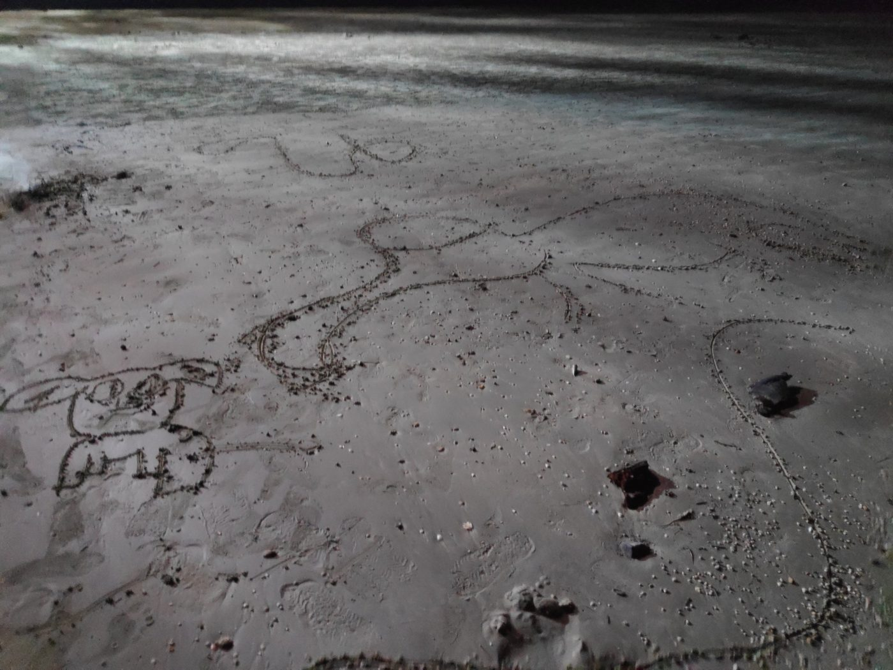
September 8: leaving for Phi Phi
On September 8 I left Krabi for Ko Phi Phi by ferry. Google Photos has five photos from 14:36 on a covered pier, pinned in Sai Thai, Mueang Krabi. I think this is the pier that the Phi Phi ferries leave from, but I did not confirm its name. I do not know which ferry I took, when it left or what the ticket cost.
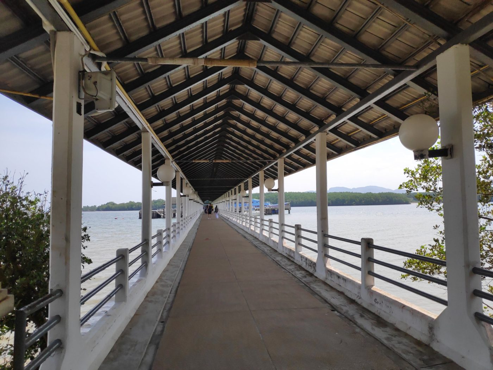
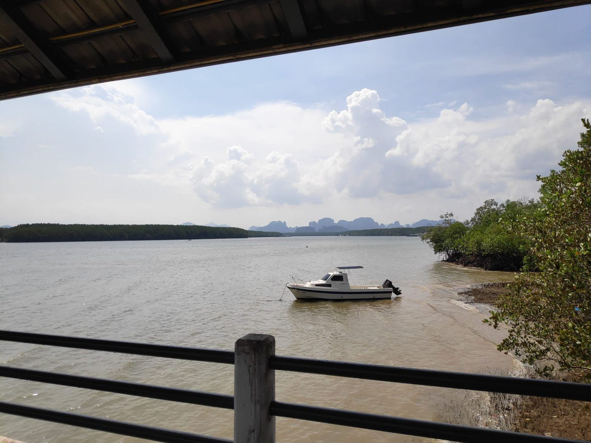
- Krabi Walking Street, what I found: a guide site, fact-checked in October 2026, says the market takes over Soi Maharaj 8, behind the Vogue Department Store, every Friday, Saturday and Sunday from about 17:00 to 22:00, and entry is free (Thai Holiday Guide).
- The ferry, what I found: a ticket site updated on October 7, 2026 lists ferries from Klong Jilad Pier to the Phi Phi islands at about 500 baht and speedboats at about 1,000 baht, with departures around 09:00 and 13:30 (Ticket2Attraction).
- What I did not find: a current boat fare to Railay, a current price for Saran Hotel, and the 2019 timetable. My photos at the pier are from 14:36, later than the early afternoon departure listed today, so the timetable may have been different or I left on a later boat.
What I do not remember
I do not remember how I got from the airport, whether I slept at Saran Hotel Krabi, what the room cost, how I traveled between Railay and the town, what the boat cost, what I paid for the shirt and the fabric, how I got to Ao Nang beach after midnight, or which ferry I took on September 8.